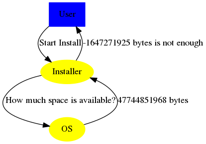
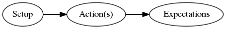
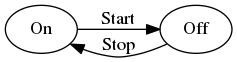
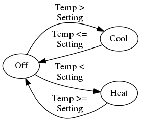
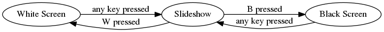
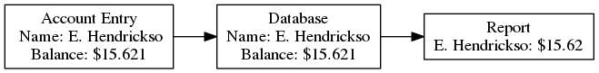
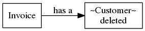
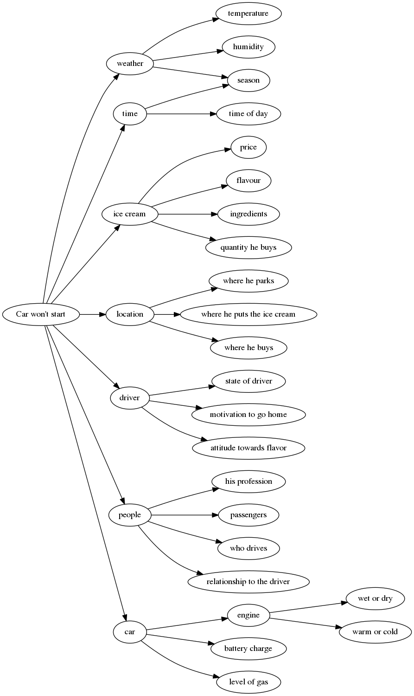

EuroSTAR Conference 2016 - First Day Summary
The First day was honored to the topic of testing with variables. Thank you … for the notes you gave us and showed us on how to test by variables while also finding out about the subjects on how to generate these variables and use them.
Notes from "Testing with variables" by Dale Emery taken by Martin 'golodhrim' Scholz
Variables and Testing
First identify your variables that could be changed and select the needed ones. But be aware, there will always be variables you are not aware of and that can influence a lot in the end. The first question we need to ask is: "What is a variable?"
- Variable
- Anything whose value can be changed
After all there is not only one type of variables, there are at all three:
- obvious, like a field on a form,
- hidden, like an internal value or
- subtle, like the state of a control
Testing here involves choosing values for every variable (not just the obvious ones).
- A Subtle Variable
In January 2004, Nasa lost contact with the Mars Rover Spirit.
They soon discovered that the Spirit had encountered a serious anomaly and was rebooting itself over and over again.
According to an article on the site Spaceflight Now, the Mars Rover problem was that there were too many files on the flash memory.
- Available Disk Space on Install

To make sure you identified a variable right, try this tip:
I could vary <VARIABLENAME>.
(<N>) possible values for <VARIABLENAME> are <VAR1>, <VAR2>, … and <VARn>.
Testing is an Information Service
Testing is a process of gathering informatiion by making observations and comparing them to expectations.
Information reduces uncertainty. Decision makers use this information to move the project forward.
We have a responsibility to provide those decision makers with the best information we can.
First explore for that who are your stakeholders. If you know who they will be, try to gather the questions they want to be answered about the software and what you can do to discover the information that will cover them. Now it is time on how to provide the information.
For that we need to move from variables to tests.
- Identify stakeholders' needs
- Brainstorm variables for it
- Select a variable to explore
- Select a value to try and
- run it.
How is a Test Case Build?
Elements of a Test Case are:

But WHY should we consider so many variables?
Simply just imagine a program that converts binary numbers to decimal.
| Input | Expected | Actual Result | Test Result |
|---|---|---|---|
| 000 | 0 | 0 | OK |
| 111 | 7 | 7 | OK |
| 101 | 5 | 5 | OK |
| 011 | 3 | 6 | nOK |
Analyzing Variables Helps Avoid the Problem of Incidental Correctness.
So at that point you should build a catalog of generic tests, they will serve you as tests for various types of variables:
- Text/Strings
- Paths
- Numbers
- Dates
- Windows
- Option settings
- etc.
Variables and Models
Testing fom existing models
Testing by creating models
Models of sytem structure
Models of system behavior
Two views of a System: Dynamic and Static…
- Dynamic models
- such as state models or flow charts show how the system behaves.
- Static models
- such as entity-relationship diagrams show the structure of the system.
So both totally different types of models, are giving us different views into the system.

On/Off are called States, Start/Stop are events and the change of states by an event are called a transition.
These simple example could be extended pretty easy to something more complex but still simple:

These easy examples could now lead us to an easy testing model:

Aboves diagram leads to the following Table:
| Slideshow | White | Black | |
|---|---|---|---|
| Slideshow | N/A | "W" | "B" |
| White | Any Key | N/A | N/A |
| Black | Any Key | N/A | N/A |
This table shows us that we don't know about keys that could also be used in the Präsentation mode, or how we could transition from Black to White with one key.
Testing from State Models
When testing from State Models, think about the following:
- Transitions
- Do all the events trigger the transitions we expect? Test every path.
- What happens if we repeat loops (submit-cancel-submit-cancel-repeat)? Check for memory leaks or data corruption.
- Interruptions
- What happens if we force an exit from intermediate states?
- What happens if we trigger events when they aren't expected?
Exercise: Modeling States
- Form teams
- Create a model of the states that a bug goes through in your bug tracking system.
- Use your model to identify variables to vary
- Design tests from your state model. Think about the various test types listed on the previous page.
- Prepare to share your model and tests with the other teams.
TODO Insert the graphic!
| REPORT | REJECT | APPROVE | REVIEW | ASSIGN | RESOLVE | TESTFW | CLOSE | REOPEN | RESUBMIT | WAIT | |
|---|---|---|---|---|---|---|---|---|---|---|---|
| SUBMITTED | x | - | - | REVIEWED | - | - | - | - | - | - | ON HOLD |
| REJECTED | - | - | - | - | - | - | - | CLOSED | - | SUBMITTED | - |
| VALIDATED | - | - | - | - | ASSIGNED | - | - | - | - | - | ON HOLD |
| ON HOLD | - | - | APPROVED | - | - | - | TESTED/QA | - | - | - | - |
| RESOLVED | - | - | - | - | - | - | TESTED/QA | - | - | - | ON HOLD |
| TESTED/QA | - | - | - | - | - | - | - | CLOSED | - | - | ON HOLD |
| CLOSED | - | - | - | - | - | - | - | - | SUBMITTED | - | - |
| REVIEWED | - | REJECTED | APPROVED | - | - | - | - | - | - | - | ON HOLD |
| ASSIGNED | - | - | - | - | - | RESOLVED | - | - | - | - | ON HOLD |
When ever there is a network connection in a diagram, try the following:
- disconnect the network
- slow the connection down (28.8 modem over Internet or VPN) or speed it up
- force timeouts
- force connection refusals
- close the port on which the server is listening
Database
Looking at the database schema can give you a great deal of information about the data dependencies in a system.
- EXAMPLE
- Check Integrity Constraints
Imagine a system where each invoice is associated with a customer record that has attributes such as contact information and credit limit.

Invoices have a dependency on Customer data. Now imagine what happens if the Customer record is deleted. What happens to the Invoice record?

Another Example is the data flow. It is always important to follow the data through the complete system system, cause you might get boundary conflicts.
Variables and Categories
Elements of Requiremetns
Categories of Computation
We can use a requirements model to help us explore the users' perspectives.
The essential elements of requirements are:
- Users
- Functions
- Attributes
- Constraints
(from Exploring Requirements by Gause & Weinberg)
Know your Users
First Identify your users. They include anyone or anything who will:
- Use it
- Integrate with it
- Get reports from it
- Be affected by it
- Make decisions about it
- Have a stake in its success
- Want to thwart it
It's a good idea to get more than one perspective in identifying users. The more inclusive this part of the process is, the fewer surprises later.
Functions are capabilities and will give you answers to the question what a system should do.
- It needs to "sort employees by salary".
- It should "report current account balance".
- It should "inform me" when a new task arrives in my inbox.
Users often express functions as verbs.
Attributes in contrast are descriptive and anser the question what characteristics the system should have.
- It should be "scalable".
- I want it to be "easy to use".
Attributes may come in the form of:
- Qualities
- reliability, scalability, testability, performance, and other "-ilities" of the system.
- Adjectives
- that describe how the software feels to the user ("responsive").
- Adverbs
- that further modify the function.
Finally Constraints are the limits. They may address:
- Technical issues
- We only run Linux here.
- The server must respond to the client within 5 seconds.
- Human factors
- This will be deployed to low resolution monitors, so the screens cannot be larger than 640x480.
- Business value
- It sould be faster than doing the same thing manually.
- Physical limitations
- Satellite communications have high latency, so our software must tolerate communication delays.
Any other kind of limits to the system.
- Exercise: Users, Functions, Attributes, Constraints
For the email system you use, identify as many users, functions, attributes and constraints as possible:
Users Functions Attributes Constraints internals send mail secure RFC conformacy externals send group mails searchable attachment size WGs booking functions fast firewalling OUs follow RFC customizable Employee - forwarding ACL-able rooms - CC compatable resources - BCC reliability Access Groups notifications role accounts archiving Admins OoO-Notes IT-Support speak proper SMTP Cover Maintenance ACLs Adversary well documented CI-Tools Spamfighting Automation Tools AV-Checks grey-/black-/whitelist organisation Structure Filtering cleanup/vacuum - Exercise:
Taken the creation comments from the movie "Dragonheart" fill out the table Users, Functions, Attributes… Here an example what can come up in 15 Minutes.
Users Functions Attributes Constraints Design-Choices Metaphors Dennis Q make you believe powerfull computer generated 18" tall tail like a swiss army knife Film Directory talk believable size Audience open mouth powerful jaws ratio Forces of Evil use hands detachable jaws frame size and format Us as a Class fly has hands Designers fight Fighting tail Sean Connery wrest Wrestling tail Dale swallow people Wings Music Maker swim sequential movement breath fire long neck pose heavy chest emote huge fangs eye colors Finally break down technical specifications by Inputs, Processing and Outputs.
Variables and Bugs!
#+BEGIN_QUOTE Every bug is 100% reproducible!*
But only if you can discover and control all the
variables that affected the software's behavior. #+END_QUOTE
When a test reveals a bug you can have three cases:
- You can reproduce it and understand why it is happening, or
- You cna reproduce it but don't understand it,
- You can't reproduce it.
Any bug will be triggered by at least one of the three points:
- Fault
- Failure
- Conditions
- Example: An Illogical Theory of Error
An old man comes to an garage, he complains that his car doesn't like some sort of Ice Cream he sometimes buys. So that's what he tells:
"Boys, my car is having trouble. It does not like when I buy Tomato-Tofu-Basil Ice Cream. I can buy vanilla, chocolate, everything, but not Tomato-Tofu-Basil one."
- Brainstorm a list of possible contributing variables.
- Categorize the variables
- Experiment methodically to eliminate possible route causes until you find the culprit.

Please if you do the testing, and use the Variable Bug Analysis consider these variables:
- Available memory
- Data in memory or cache
- Program state
- Configuration state
- Other program state
- Execution speed
- System load
- Other parts of the system.